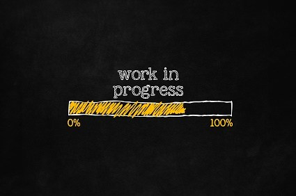

ES3011 Experimental Lab
Lab Overview
Lab Instructions
Lab 1
Lab 2
Lab 3
Lab 3: Laplace Transforms & Mathematical Modeling II
Lab 4
Lab 5
Lab 6
Lab 7
ES3011 Experimental Lab
Docs
»
Lab Instructions »
Lab 3
Lab 3: Laplace Transforms & Mathematical Modeling II
¶

« Previous
Next »